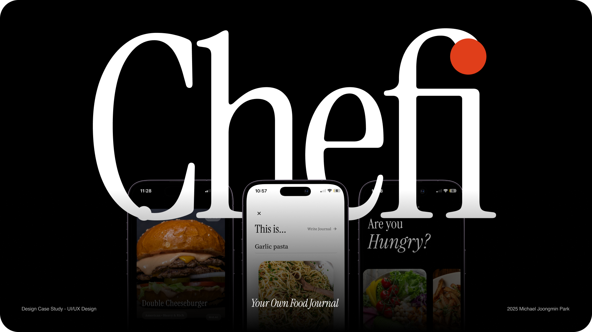
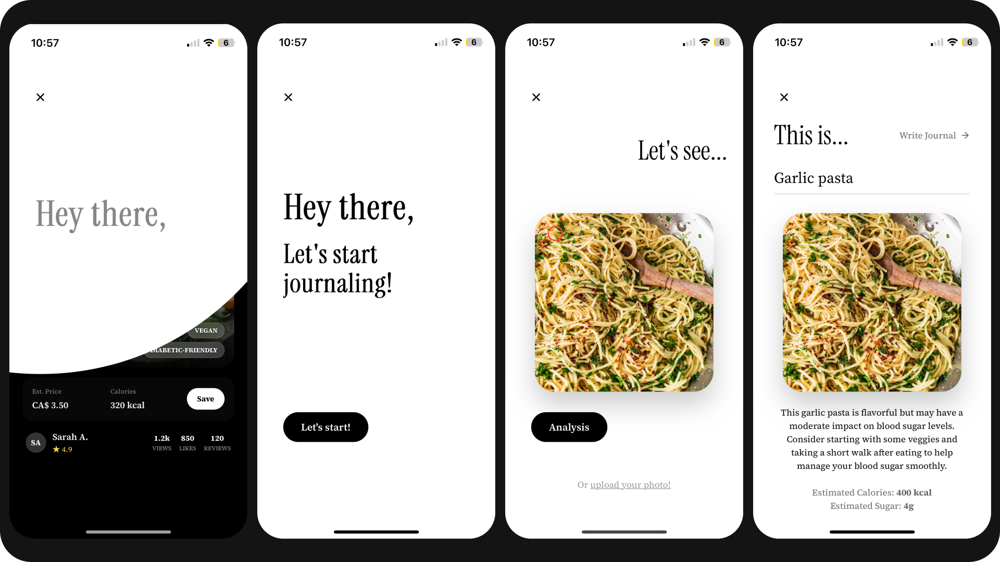
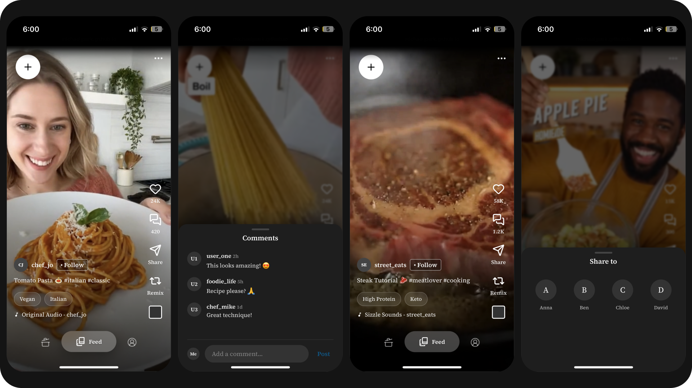
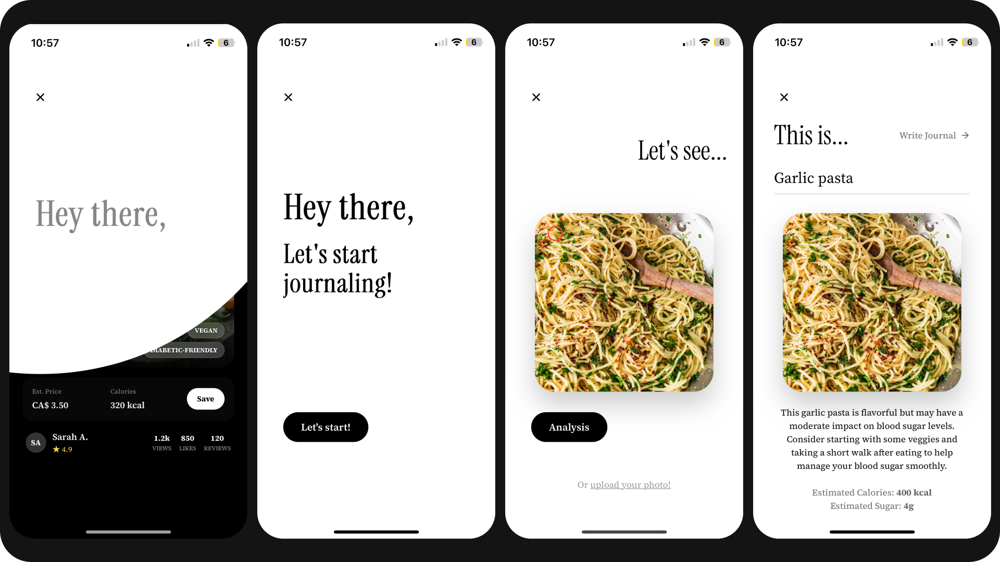
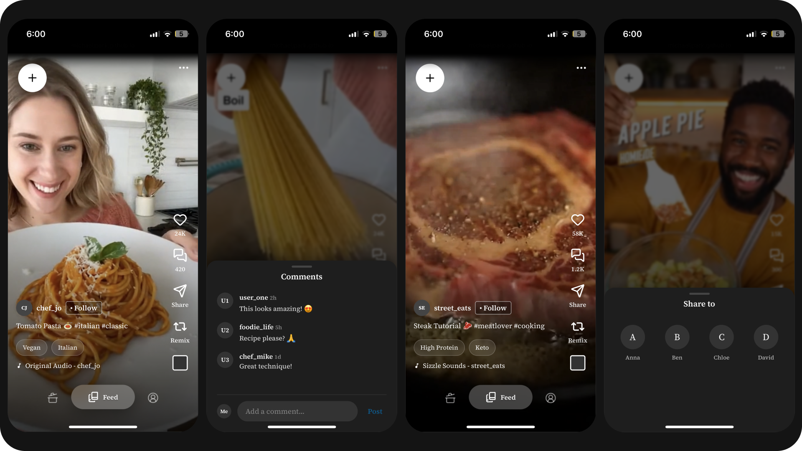

Chefi
Your Own Food Journal
UI/UX Design
December 5th, 2025 - December 21st, 2025
(2 weeks)
Recipe Sharing Platform
Redesign of the Human Centred Design Project (2023)
App design
Your Own Food Journal
An executive summary highlighting the project's context, identifying core market demands, and forecasting the service's growth potential.
Drawing upon existing service models, this project explored what value people actually need today and how such value can be delivered from a UX perspective. Simultaneously, this project also explored how new relationships could be established.
To explore the project's profitability and feasibility with a focus on whether it is actually demanded in the market, this project analyzed market value to complement the micro layer emphasized in traditional Human-Centred Design.
This project is an extension of the INDS-2016 course from OCAD University's Industrial Design program, with a focus on final service redesign. Rather than targeting the micro layer and highly specific users as in the original project, it was structured to be more inclusive and to allow for future development. Simultaneously, appropriate aesthetic and UI design were implemented to enable the service design to take the form of a journal.
Initially, this project assumed situations in the most immediate environment leading up to users' app usage and analyzed existing interactions to diagnose what problems existed.
Focusing on the previously analyzed problems, this project conducted a fundamental analysis of what interactions could occur if the service design were applied to the same situation, how user pain points could be addressed, and what touchpoints could function throughout that process. Based on this analysis, user flow mapping was performed.

For this UX service, it was confirmed that a cyclical flow and two-way flow could occur since the designed service has the structure of a social media platform. This enabled a rough assessment of how administrators would be required at the blueprint stage during product expansion.
 


